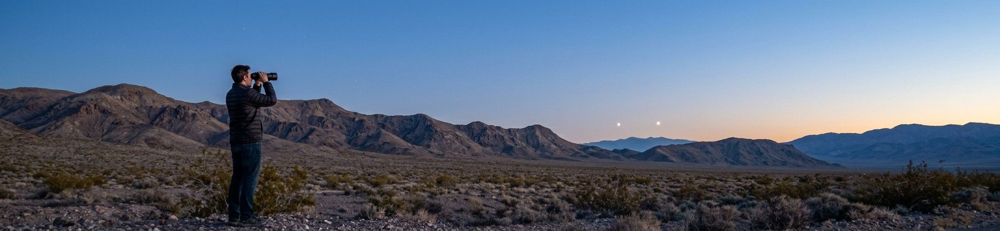
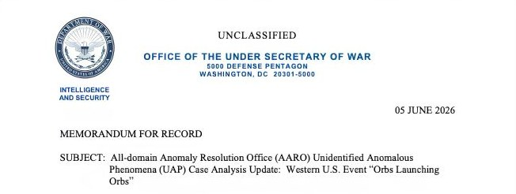

On June 12, 2026, the Department of War published the third tranche of PURSUE files: 72 records made up of 53 PDFs, 10 images, 3 audio recordings, and 6 videos. The historical documents drew most of the early headlines, among them the 1949 US Army flying saucer study, the CIA's 1953 Robertson Panel report, and NASA Gemini crew debriefings. But the most consequential item in the release was not a relic. It was a current government analysis of a recent event, signed by the director of the office responsible for resolving these cases.
The document is an All-domain Anomaly Resolution Office unresolved case analysis update, dated June 5, 2026, and signed by AARO director Jon Kosloski. It concerns what the office calls the Western United States Event, a series of sightings that took place over two days in October 2023 near a sensitive national security site. For the first time in the PURSUE program, the government did not simply release raw witness material and let the public argue over it. It released its own reasoning, including the parts of that reasoning that do not resolve.
That is what makes this file worth reading closely. It is the rare government UAP document that shows its work, states a provisional conclusion, and then undercuts the strength of its own conclusion in the same breath. Both halves of that move matter.
What the Agents Reported
According to the AARO summary, six federal law enforcement special agents observed unusual aerial activity over two days in October 2023, working in teams of two and reporting consistent features from multiple viewing angles. The core of what they described is a specific, repeatable sequence. An orange orb would appear for roughly one to two seconds, release a cluster of two to four smaller red orbs, and then vanish. The reporting personnel referred to the orange object as a "mother orb," language that has since traveled well beyond the document itself. The agents also described the phenomena as silent.
The behavior the witnesses attributed to the red orbs is the part AARO flagged as anomalous. The agents described varied kinematic profiles, including what they characterized as coordinated horizontal motion and apparent changes in altitude. The red orbs reportedly persisted for several seconds before disappearing. In at least one instance, the witnesses described a red orb that remained stationary above a ridgeline for several hours.
It is worth holding those two observations side by side, because they sit in tension. A light that performs coordinated, fast, altitude-changing maneuvers and a light that hangs motionless over a ridge for hours are not obviously the same class of object. The report groups them under one event because the same personnel reported them in the same window, not because the office has established that they share a cause.

What AARO Concluded, and How It Qualified That Conclusion
AARO's headline finding is that roughly 40 percent of the reported phenomena from the event lack a reasonable explanation and remain unresolved. The office frames its assessment as exclusion based. Having worked through the conventional candidates and been unable to fit them to the descriptions, AARO offers a preliminary hypothesis that unrecognized technology may account for up to 40 percent of the phenomena associated with the incident.
A reader could stop there and walk away with a dramatic takeaway. The government says 40 percent of a UAP event near a sensitive site is unexplained and might involve unknown technology. That sentence is accurate, and it is also incomplete in a way the document itself insists on correcting.
AARO states plainly that the unrecognized technology hypothesis is provisional, based solely on narrative testimony and on the elimination of competing explanations, and unsubstantiated by technical data or physical evidence. The agents collected no photographs, no video, and no instrument readings during the incident. AARO did have data to work with, just not from the witnesses. The office cross-correlated the narrative accounts against commercial and military flight logs, radar returns, and Automatic Dependent Surveillance-Broadcast tracks. That correlation is how it attributed roughly 60 percent of the reported activity to military aircraft dispensing infrared countermeasure flares during a standard exercise. The 40 percent residual is what remained, the portion for which radar and ADS-B showed no known aircraft within the observers' estimated line of sight.
That distinction matters. The residual is not unexplained because nobody looked at sensor data. It is unexplained because the available sensor data did not place an object where the agents reported one, and because the descriptions themselves cannot be independently checked. An exclusion-based residual built that way is only as strong as the completeness of the hypotheses ruled out and the reliability of the testimony left over. When part of that input is human memory of fast-moving points of light at distance, the second of those is weak. AARO is not hiding this. The office built the caveat into the finding.
Why Observer Discipline Matters
The weak point in the Western US Event is not the witnesses' honesty. It is the limits of unaided perception under pressure. The STARGATE program spent two decades building structured protocols precisely because raw impressions are unreliable until they are disciplined. Psionic Training teaches that same structure.
Start Training →The Strongest Mundane Reading
A serious skeptic does not need to accuse six federal law enforcement agents of lying. AARO did not. The office credited the agents' professionalism and their familiarity with U.S. military systems, and still could not close the case. The useful skeptical questions sit inside AARO's own analysis, not outside it.
Start with the flares. AARO attributes about 60 percent of the activity to infrared countermeasure flares that military aircraft in the area were confirmed to be dispensing during an exercise. The reason the office does not extend that explanation further is, in part, that the agents, who know what flares look like, stated that these did not look like flares. That judgment is itself narrative testimony, the same category of evidence AARO flags as limited. It is reasonable to suspect the flare explanation reaches past 60 percent, particularly for the brief, repeating orange-then-red sequences that resemble a dispensing pattern.
Then take the hardest single detail, the red orb reported as stationary above a ridgeline for several hours. AARO rules out drones here, since a multi-hour loiter exceeds typical battery life, and it rules out flares, since none burn that long. But the office also concedes that for stationary, loitering behavior a misidentified celestial body becomes, in its words, more plausible though still unlikely. A bright planet low on the horizon, watched for hours by observers already primed toward anomaly, is the most ordinary candidate on the table for that specific observation, and it sits in the same case file as the dynamic objects rather than in a separate one.
There is also the structure of the observation itself. Once trained observers register one unusual light and begin actively watching for more, ambiguous stimuli that would otherwise pass unnoticed get recruited into the event. The two-day duration and the multiple witnesses are real strengths of the report, and they add credibility to the claim that something was seen. They do not add resolution to the claim about what it was. Several people agreeing on similar language produces a more confident shared description, not a more precise one, and AARO had no imagery against which to test it.

What Genuinely Stays Open
The mundane reading is strong, but it is not the end of the matter, and intellectual honesty requires saying why. AARO's own analysts, working with the full classified context of the site and the reports, did not close the case. They could have. Offices that want a problem to disappear know how to write a paragraph that makes it disappear. Instead AARO let a 40 percent residual stand and labeled it unresolved as of June 2026.
That residual is not evidence of unknown technology. AARO does not claim it is. But it is evidence that the office could not, with the information available, fit every described element to a conventional cause it was willing to assert. The coordinated kinematics of the red orbs, if the witness descriptions are even roughly accurate, are the element least comfortably explained by flares or a static celestial body. Whether those descriptions are accurate is precisely what the radar and flight-track data cannot confirm, because they show no object there to measure.
The location matters too. This was not a sighting over an empty field. It was a repeated, two-day event near a sensitive national security site, observed by federal personnel. Even under the most deflationary reading, in which everything turns out to be drones, that is a counterintelligence and airspace security concern of real weight. The interesting question may not be whether the objects were extraterrestrial. It may be why uncontrolled aerial activity was able to persist for two days over ground the government cares about, and why the resolution still depends on testimony rather than the sensor coverage such a site would be expected to have.
The Document That Shows Its Work
What separates the Kosloski file from the bulk of the historical PURSUE material is method. The 1949 Army study and the 1953 Robertson Panel report are artifacts of how the government once thought about this problem. They are valuable as history. The Western US Event analysis is something different. It is a live demonstration of how AARO reasons now, published while the case is still open.
The structure is the same one any careful investigator would use. Gather the reports, enumerate conventional explanations, attempt to fit each one, record what fits and what does not, and quantify the unexplained remainder while stating exactly how much weight that remainder can bear. The 40 percent figure is meaningful only because it arrives chained to its own limitations. Strip the limitations away, as most secondhand coverage does, and the number becomes a headline that the document does not support.
This is the right standard to hold every future PURSUE release to. A case is not strong because the unexplained percentage is high. It is strong when the unexplained percentage survives contact with technical data. Here the technical data AARO had, radar and flight tracks, narrowed the case rather than closing it. It accounted for the 60 percent and showed nothing measurable behind the remaining 40 percent. What is missing is not analysis but imagery, the kind of direct sensor record that could turn a description into a measurement.
The Science Council Arrives at the Same Time
Five days after the Kosloski report was dated, the institutional context around it shifted. In mid June 2026, the Office of the Director of National Intelligence, the FBI, and the Department of Defense established a UAP Science Advisory Council to provide scientific guidance across agencies, in support of the administration's transparency directive. The council is led by Harvard astrophysicist Avi Loeb and draws members from anomaly identification, data analysis and AI tooling, physics and instrumentation, statistics, molecular biology, materials science, oceanography, anthropology, and psychology. Officials confirmed that all data shared with the council would be unclassified.
The timing is not incidental. A case like the Western US Event is exactly the input such a council exists to process. The Kosloski report ends where the evidence ends, with a labeled residual and an explicit absence of technical data. A standing scientific body, equipped with statistical and instrumentation expertise, is positioned to ask the follow-up questions that an exclusion-based narrative analysis cannot. What sensor coverage existed at the site and why was none of it conclusive. How should coordinated-motion testimony be weighted against the well-documented failure modes of night-sky perception. What would it take to move a case like this from testimony to measurement.
Whether the council delivers that rigor or becomes another layer of process is an open question. Its value will be measured the same way the Kosloski report should be: by whether its conclusions stay tethered to the strength of the underlying data.
How to Read the Next One
The Western US Event is likely a preview of the PURSUE releases to come. More files, more witness-heavy cases, more unresolved percentages presented with varying degrees of caution. The Kosloski report sets a useful baseline because it is honest about the difference between an unexplained observation and an inexplicable one. Everything it could not explain, it traced to a single root cause: the absence of technical data, not the presence of impossible physics.
For readers who follow this material seriously, the discipline is the same one that defines good remote viewing research and good anomaly research generally. Separate what was observed from what it was claimed to be. Treat testimony as a real but limited data class. Notice when an institution is being careful and reward that, and notice when a number has been severed from its caveats and discount that. The government's own analysts modeled the right approach in this file. The work now is to hold the rest of the program, and the new science council, to the standard AARO set for itself.
That standard connects directly to the record the Project STARGATE archive established decades ago. The same government that ran structured protocols to discipline human perception is now publishing case files that live or die on the reliability of human perception. The Western US Event is unresolved not because the witnesses failed, but because perception without instrumentation can only take an investigation so far. That limit is the oldest lesson in this field, and it is the one the newest file restates most clearly.
Share this analysis

Perception is trainable. So is the discipline to check it.
The Western US Event stayed unresolved because unaided perception has limits, especially with nothing to verify it against. That is the problem Project STARGATE worked for two decades: structured protocols that discipline raw impressions and test them against feedback. Those remote viewing methods are documented and available. Psionic Training is built on them.
Begin Training →PURSUE File Alerts
Get notified when new PURSUE tranches drop, plus our analysis of each release. No noise.